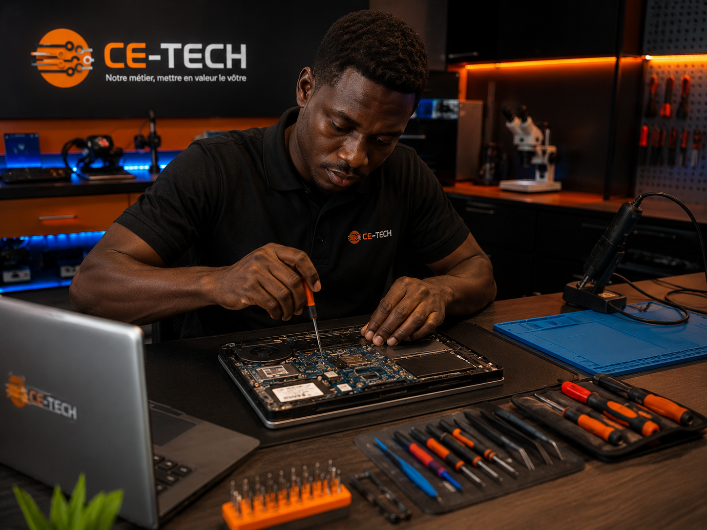

Réparer, protéger et optimiser — nous veillons sur votre parc informatique pour que vous puissiez vous concentrer sur l'essentiel.

Analyse profonde du hardware et du software. Nous identifions la panne en un temps record pour une remise en service rapide.
Nettoyage interne, changement de pâte thermique et optimisation système pour prolonger la durée de vie de vos équipements.
Configuration LAN, Wi-Fi professionnels et protection contre les cyber-menaces pour sécuriser vos données.
Un processus transparent et rapide pour une sérénité totale.
Nous réceptionnons votre matériel ou intervenons sur site pour un audit complet de votre parc.
Aucune surprise. Nous validons ensemble les réparations et les coûts avant toute intervention.
Nos techniciens procèdent aux opérations avec rigueur, précision et dans le respect de vos délais.
Nous testons chaque machine et assurons un suivi rigoureux après chaque intervention.